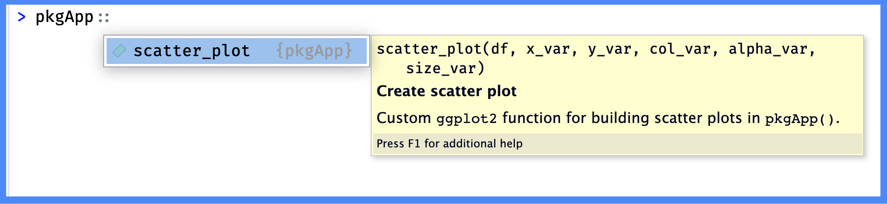
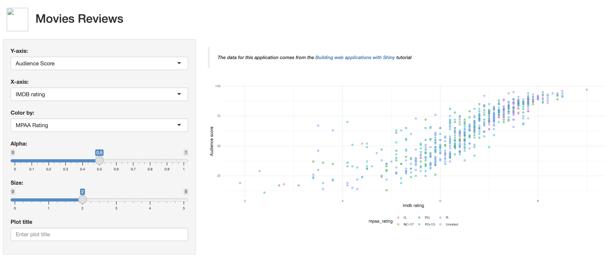

# pkgs <- c("shiny", "shinythemes", "stringr", "ggplot2", "rlang")
# install.packages(pkgs, quiet = TRUE)
# packages ------------------------------------
library(shiny)
library(shinythemes)
library(stringr)
library(ggplot2)
library(rlang)
# movies_app ------------------------------------
movies_app()Dependencies
Warning!
This section is being revised, so the information is subject to change. Thank you for your patience.
The previous chapter covered using roxygen2 to document the functions in pkgApp. In this chapter, I will show the roxygen2 tags used to update the NAMESPACE, and the distinction between package-level dependencies and function-level access.
Chapter 4 recap: documenting functions with
roxygen2
Required @tags for all functions:
- Make sure all functions have a documented title & description (
@titleand@descriptiontags optional), function inputs and outputs (@paramand@return), and demonstrations of how the function works (@examples)
Shiny-specific documentation:
Use
@seealsoto link module UI and server functions, and@familyto link functions within a similar topic (i.e., ‘import data’ or ‘scatter plot’)Provide shiny-specific information (use within the app, reactive state, more details about the
@params, etc.) in@sectionblocks.
See the roxygen2 branch for more information
Your package NAMESPACE
The previous chapter illustrated how roxygen2 connects the code in the R/ folder to the documentation in the man/ folder, but roxygen2 tags are also used to document the dependencies in the NAMESPACE file:

roxygen2roxygen2 writes the NAMESPACE fileThe NAMESPACE file serves two important purposes: 1) it lists which functions and objects from your app-package are exposed to other users, and 2) it controls which functions from external (i.e., add-on) packages your app-package imports.
Up to this point, we’ve been using document() to generate .Rd files in man/. Now we’ll use document() to make sure the NAMESPACE is updated with the correct imports and exports.
pkgApp
Currently pkgApp has documentation for the help files in R/. We can see this by looking in the man/ folder:
man/
├── mod_scatter_display_server.Rd
├── mod_scatter_display_ui.Rd
├── mod_var_input_server.Rd
├── mod_var_input_ui.Rd
├── movies_app.Rd
├── movies_server.Rd
├── movies_ui.Rd
└── scatter_plot.Rd
1 directory, 8 filesOr by checking any of the functions in pkgApp with ?function.
When in doubt
During development, you might forget which devtools function you ran last (I know I do). When this happens, I’ve found loading, documenting, and installing will re-oriented you to the current state of the app-package.
Ctrl/Cmd + Shift + L
ℹ Loading pkgAppCtrl/Cmd + Shift + D
==> devtools::document(roclets = c('rd', 'collate', 'namespace'))
ℹ Updating pkgApp documentation
ℹ Loading pkgApp
Documentation completedCtrl/Cmd + Shift + B
==> R CMD INSTALL --preclean --no-multiarch --with-keep.source pkgApp
* installing to library ‘/path/to/local/install/pkgApp-090c61fc/R-4.2/x86_64-apple-darwin17.0’
* installing *source* package ‘pkgApp’ ...
** using staged installation
** R
** byte-compile and prepare package for lazy loading
** help
*** installing help indices
** building package indices
** testing if installed package can be loaded from temporary location
** testing if installed package can be loaded from final location
** testing if installed package keeps a record of temporary installation path
* DONE (pkgApp)
Restarting R session...
> library(pkgApp)Seeing all three functions execute without any errors never gets old!
Running movies_app()
The movies_app() has been moved into the R/ folder and documented, so app.R now only contains the following:
Let’s run the standalone app function.
movies_app()Error in movies_app() : could not find function "movies_app"Wait, what?
What do you mean, “could not find function”?
Let’s recap what we know:
The
R/movies_app.Rfile contains the code and documentation formovies_app()The
man/movies_app.Rdfile is being generatedapp.Rloads the necessary packages before callingmovies_app()
movies_app() files:
├── R/
│ └── movies_app.R
├── man/
│ └── movies_app.Rd
└── app.RSo why can’t R find "movies_app" function in app.R?
The error is telling me that despite having documentation for movies_app() in R/ and generating the corresponding .Rd file in man/, the movies_app() function isn’t being exported from pkgApp.
This becomes more apparent when we try to explicitly namespace movies_app() from pkgApp:
pkgApp::movies_app()Error: 'movies_app' is not an exported object from 'namespace:pkgApp'
roxygen2 exports
In order to make a function in R/ accessible to the users of your package, this function needs to exported. This process is handled with the @export tag from roxygen2 (and devtools::document()).
What do I @export?
When determining which functions to export from your app-package, ask yourself the question,
“When someone else calls library(pkgApp), what functions are available?”
R Packages has great advice on what functions should not be exported:
‘We believe that packages that have a wide audience should strive to do one thing and do it well. All functions in a package should be related to a single problem (or a set of closely related problems). Any functions not related to that purpose should not be exported.’ - What to export, R Packages, 2ed
There are multiple ways to interpret the advice above in the context of a shiny app-package:
If we assume the ‘problem’ we’re solving with
pkgAppis ‘create a shiny movies app’, then it might make sense to only export the standalone app function.If the ‘problem’
pkgAppsolves is ‘visualize relationships in movie review data’, then we’d want to export thescatter_plot()utility function.If we extend the ‘problem’ statement to the broadest possible definition assume users will want access to any functions that give them the ability to customize, extend, or integrate the contents of
pkgAppwith other tools, then the module functions become prime candidates for exporting.
My advice on exporting functions from your a app-package:
Aim for a balance between simplicity and utility when deciding on exported functions
@export
Export a function by including the @export tag in the roxygen2 comment block above the function you want to export:
-
@export: The functionnameis not required. Read more here#' @export name (*optional)
Exporting from utils.R
Shiny apps often contain helper functions (i.e., non-shiny code) in helper.R or utils.R files. This isn’t a bad practice (in fact, it’s encouraged in Mastering Shiny). However, as we transition to an app-package, scatter_plot() no longer belongs in R/utils.R if we’re using the advice in R Packages,
‘most of our packages have a
utils.Rfile (Section 6.1) that contains small utility functions that are useful internally, but aren’t part of the core purpose of those packages. We don’t export such functions.’
Going forward, I’ve renamed R/utils.R to R/scatter_plot.R so it aligns with the naming conventions in other R packages.
More info on
R/utils.R
For a deep dive on R/utils.R files in R packages, I recommend reading Dissecting R Package “Utility Belts”
I’ll add the @export tag to R/scatter_plot.R
-
I’ve included the name of the function for clarity (but it’s not required)
#' @export scatter_plot
Low-key
@exports with @keywords internal
If you’d like function to be exported, but not listed in the package index, you can combine @export with @keywords internal. These should be used in combination,
#' @export
#'
#' @keywords internalFor example, adding @export and @keywords internal to R/scatter_plot.R will make the function accessible to users:

And include the help file:

However, if a user were to click on the Index for pkgApp (at the bottom of the help file)

scatter_plot is not listed:

roxygen2 imports
Now that we’ve covered which functions we want accessible to users of pkgApp, we need to address the functions pkgApp imports. If we continue using scatter_plot() as an example, we see it contains functions from two add-on packages (ggplot2 and rlang):
show/hide scatter_plot()
scatter_plot <- function(df, x_var, y_var, col_var, alpha_var, size_var) {
ggplot2::ggplot(data = df,
ggplot2::aes(x = .data[[x_var]],
y = .data[[y_var]],
color = .data[[col_var]])) +
ggplot2::geom_point(alpha = alpha_var, size = size_var)
}Two components help to ensure both ggplot2 and rlang functions become part of pkgApp:
Call add-on package functions using the
package::function()syntax, andInclude them in the
NAMESPACEby using either@importFromor@import
Explicit namespacing let’s users know which functions are from your package and which functions are from external packages. Listing external functions and packages ensures their loaded when users install and load your package.
@importFrom or @import
I’ve included both tags below, but you should use @importFrom far more than @import (with the exception being @import shiny). Read more here:
-
@importFrom: import a function from an add-on package into your packageNAMESPACE.#' @importFrom package function -
@import: import all functions from an add-on package into yourNAMESPACE.#' @import package
Below is an example of @importFrom in R/scatter_plot.R:
#'
#' @importFrom ggplot2 ggplot aes geom_point
#' @importFrom rlang .data
#' To record these changes in the NAMESPACE, I’ll load() and document():
Ctrl/Cmd + Shift + L
ℹ Loading pkgAppCtrl/Cmd + Shift + D
Note that the contents of man/utils.Rd have now been written to man/scatter_plot.Rd:
==> devtools::document(roclets = c('rd', 'collate', 'namespace'))
ℹ Updating pkgApp documentation
ℹ Loading pkgApp
Writing NAMESPACE
Writing scatter_plot.Rd
Writing NAMESPACE
Documentation completedYou may have noticed the document() resulted in the NAMESPACE being written twice (one for imports, one for exports).
Ctrl/Cmd + Shift + B
After installing pkgApp, I can use pkgApp:: in the Console and see the scatter_plot() function help file in the tab completion:

pkgApp::scatter_plot()scatter_plot()Exporting scatter_plot() also means users can run the examples in the scatter_plot() help file,

scatter_plot() examples?scatter_plot
NAMESPACE directives
After adding the @export and @importFrom tags in the R/scatter_plot.R file and documenting the package, roxygen2 writes the exports and imports in the NAMESPACE file.
The NAMESPACE file contains directives, which are derived from roxygen2 tags:
The
@export scatter_plottag results in theexport(scatter_plot)directiveThe
@importFrompackagefunctiontag creates theimportFrom(package, function)directives

NAMESPACE fileNAMESPACE directivesThe NAMESPACE file ensures that the package environment is isolated and controls which functions from add-on packages can be used by your package. It also helps avoid naming conflicts between different packages.
DESCRIPTION Imports:
So far we haven’t run devtools::check() on pkgApp, which is fine in this stage of development. However, check() is helpful here in identifying a common point of confusion when managing dependencies, so I’ve included a specific ERROR you’d find from running check() on pkgApp:
── R CMD check results ────────────────── pkgApp 0.0.0.9000 ────
Duration: 7.7s
❯ checking package dependencies ... ERROR
Namespace dependencies missing from DESCRIPTION Imports/Depends entries:
'ggplot2', 'rlang'
See section ‘The DESCRIPTION file’ in the ‘Writing R Extensions’
manual.This particular error brings us (intentionally) to an important point about dependency management in R packages:
The
NAMESPACEfile manages function-level access, importing functions from other packages to be used in your package, and exporting functions from your package for others to useThe
DESCRIPTIONfile handles package-level dependencies, specifying which packages that your package uses

roxygen2, NAMESPACE, & DESCRIPTIONroxygen2 does not connect the imports to the DESCRIPTIONThe differences between the NAMESPACE and DESCRIPTION can be a common point of confusion when managing dependencies, so try to remember that whenever you update the NAMESPACE directives with @import or @importFrom, it’s important to sync this with the Imports: field in the DESCRIPTION file:
Package: pkgApp
Version: 0.0.0.9000
Type: Package
Title: movies app
Description: A movies data shiny application.
Author: John Smith [aut, cre]
Maintainer: John Smith <John.Smith@email.io>
License: GPL-3
DisplayMode: Showcase
RoxygenNote: 7.2.3
Encoding: UTF-8
Roxygen: list(markdown = TRUE)
Imports:
ggplot2,
rlangYou can also add packages to the DESCRIPTION file with usethis::use_package().
NAMESPACE in pkgApp
I’ve added @export to each function in pkgApp and used explicit namespacing (::) with @importFrom to import the functions from the add-on packages.
-
R/movies_app.Rshow/hide R/movies_app.R roxygen2
# movies_app() is the standalone app function, so we'll export # this function and @import shiny here: # ============================================================== #' #' @export #' #' @import shiny #' -
R/movies_ui.Rshow/hide R/movies_ui.R & R/movies_server.R roxygen2
# movies_ui() and movies_server() both use only shiny functions, # so they don't need any @import or @importFrom tags (but both # are exported): # ============================================================== #' #' @export #' #' -
R/mod_var_input.Rshow/hide R/mod_var_input.R roxygen2
# mod_var_input_ui() and mod_var_input_server() only use shiny # functions, so no need for @import or @importFrom tags (however, # this module is exported): # # ============================================================== #' #' @export #' #' -
R/mod_scatter_display.Rshow/hide R/mod_scatter_display.R roxygen2
# mod_scatter_display_ui() also only contains shiny functions # (no @import or @importFrom) so this function only gets an # @export tag: # ============================================================== #' #' @export #' # mod_scatter_display_server() uses functions from tools, # ggplot2 and stringr (all are imported with @importFrom tags). # This function is also exported: # ============================================================== #' @export #' #' @importFrom tools toTitleCase #' @importFrom stringr str_replace_all #' @importFrom ggplot2 labs theme_minimal theme #'
The updated DESCRIPTION file is below:
Package: pkgApp
Version: 0.0.0.9000
Type: Package
Title: movies app
Description: A movies data shiny application.
Author: John Smith [aut, cre]
Maintainer: John Smith <John.Smith@email.io>
License: GPL-3
DisplayMode: Showcase
RoxygenNote: 7.2.3
Encoding: UTF-8
Roxygen: list(markdown = TRUE)
Imports:
shiny,
ggplot2,
rlang,
stringr,
tools
<remember to keep an empty final line>Ctrl/Cmd + Shift + L, D, B
After pkgApp installs, I’ll check the namespace by using pkgApp:: in the Console:

pkgApp:: namespacepkgAppapp.R
As a final step, we want to remove any calls to library() in pkgApp (these packages are now handled in the NAMESPACE and DESCRIPTION files).
app.R should now contain a single call to library(pkgApp) and then the movies_app() function:
# pkgs <- c("shiny", "shinythemes", "stringr", "ggplot2", "rlang")
# install.packages(pkgs, quiet = TRUE)
# load pacakge ----------------------------------
library(pkgApp)
# movies_app ------------------------------------
movies_app()
pkgApp::movies_app()pkgApp
The code for the next section is in the [03_dependencies] branch of the [pkgApp] repo.
Recap
Dependencies recap
This chapter covered:
-
NAMESPACE: lists the exported functions and the functions your package imports from add-on packages.NAMESPACEexports: Aim for a balance between simplicity and utility when deciding which functions to export ((i.e., what functions should be available to users who install your package)NAMESPACEimports: The@import/@importFromtags make the functions from add-on packages available to your package. Use@importFromfor most add-on package functions (the only exception beingshiny, which you’d want to use@import)
DESCRIPTIONImports:: use this field to list the packages that your app-package uses. Functions from these packages will be available for your package, but not for the user unless they use the::operator or load the package themselves withlibrary().
The Imports: field in the DESCRIPTION handles package-level dependencies (and it is managed manually or with usethis::use_package()), while the NAMESPACE handles function-level access (with @export and @import and @importFrom).
In the next section, we’ll cover how the ensure the movies.RData becomes part of pkgApp